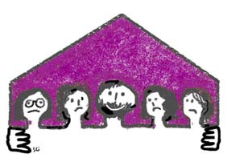

پذيرش > تریبون > گزارش كمپين > تعدد زوجات و حقوق چند وجهی برای مردان/ زن: شوهرم گفت ازدواج کرده و دیگر مرا نمي (...)


 تعدد زوجات و حقوق چند وجهی برای مردان/ زن: شوهرم گفت ازدواج کرده و دیگر مرا نمي خواهد تعدد زوجات و حقوق چند وجهی برای مردان/ زن: شوهرم گفت ازدواج کرده و دیگر مرا نمي خواهد
30 دی 1386 - مريم مالک - نسخه قابل چاپ
كاغذي كه با تيتر درشت روي آن نوشته شده تنظیم دادخواست و فلشي در كنار آن، مراجعه كنندگان را به سمت انتهاي دادگاه مي كشاند. پنج میز و صندلی در یک اتاق 24 متری رديف گذاشته شده اند و همهمه زنان و مرداني كه درخواست هايشان را با صداي بلند مطرح مي كنند، فضاي اتاق را پر كرده است.
« آقا نميذاره بچه ام رو ببینم»،
« خانمم مهرش رو اجرا گذاشته، نمیتونم پرداخت کنم، میخوام قسطیش کنم»،
« اومدیم توافقی از هم جدا بشیم» و ....
بعد از تنظیم دادخواست باید به زيرزمين دادگاه بروي تا بر روي پرونده ات تمبر الصاق شود و منتظر بماني تا به يكي از شعبات دادگاه معرفي ات كنند. نیم ساعت، یک ساعت، یک ساعت و نیم. بالاخره نوبتت می شود و مي تواني پيش قاضي بروي هرچند حالا ديگر ساعت كاري دادگاه تمام شده ايت و بايد فردا مراجعه كني.
زن می گفت:« 3 ساله که پسرم رو ندیدم، دیروز بالاخره موفق شدم مدرسه اش رو پیدا کنم. معلمش گفت رفته دستشوئی، فقط مي تونيد يك لحظه ببینیدش، پدرش گفته شما حق نداريد ببينيدش. وقتي در دستشويي ديدمش با تعجب به من نگاه كرد و اول من رو نشناخت. بغلش كردم و بوسيدمش اما يك دفعه معلمش اومد و سرم داد زد كه برم بيرون. مجبور شدم برم چون پسرم خيلي ترسيده بود.»
حالا براي چي اومديد دادگاه؟
اومدم درخواست طلاق بدم و حق ملاقات فرزندم رو بگیرم.
با تعجب پرسيدم: شما طلاق نگرفتید ولي سه ساله بچه تون رو نديد؟
از شوهرم و خانواده اش می ترسم. هر کاری بگین ازشون برمياد. پسر خالمه و حتي خاله و بقيه فاميل هم جرات حرف حرف زدن با اين مرد رو ندارند. يك هفته رفته بودم تا پدر مريضم رو ببينم وقتي برگشتم شوهرم راهم نداد خونه. گفت که ازدواج کرده و دیگه من رو نمیخواد. چون شناسنامه ام دست خودش بود یک زن ديگه رو جاي من برده بود محضر و رضايت داده بود تا ازدواج مجدد كند. خونه پدرشوهرم طبقه بالا بود رفتم و از اونها كمك خواستم. اما اون هم بعد از دو روز از خونه اش بيرونم كرد. وضع مالی شوهرم خیلی خوبه و با منشی شرکتش ازدواج کرده. از قبل با هم ارتباط داشتند و من نمي دونستم.»
زن بي وقفه ادامه مي دهد:« نشسته بودم خونه و شوهرداری و بچه داری می کردم اما این شد عاقبتم. اولین دختر خانواده هستم و سه خواهر کوچيکتر هم دارم. پدر و مادرم نزدیک بود از ناراحتی سکته کنند. سه سال تمام صبر کردم و همه رو واسطه کردم تا شاید شوهرم پشيمون بشه و بیاد با هم زندگی کنیم اما نه تنها نيومد كه من رو از دیدن پسرم هم محروم کرد. الان پسرم پیش عمه اش زندگی می کنه و شوهرم با زن جديدش که 20 سال از خودش کوچيکتره. دیگه خسته شدم و اومدم مهريه ام رو به اجرا بگذارم و بعد هم دادخواست طلاق بدم. می خوام پسرم رو ببينم و با زور و اجبار هم كه شده بايد اين حق رو بگيرم. هميشه از اسم طلاق هم بيزار بودم اما حالا فقط طلاق مي تونه مشكلم رو حل كنه.»
در قانون حمایت خانواده مصوب سال ۴۶ تصویب شد كه اگر مردی بخواهد با داشتن زن، همسر دیگری اختیار كند باید حتما از دادگاه اجازه بگیرد و دادگاه در صورت احراز صلاحیت مرد برای اجرای عدالت، اجازه ازدواج مجدد را می دهد، اما در بسياري از موارد، مردان با استفاده از زور و تهديد، همسر اول را مجبور به دادن رضايت مي كنند.
ماده ۱۴ این قانون پیش بینی كرده بود؛ اگر مردی بدون اجازه همسر خود مبادرت به ازدواج دوم كند به مجازاتی كه در ماده ۵ قانون ازدواج مصوب ۱۳۱۰ مقرر شده، محكوم می شود. این مجازات ۶ ماه تا ۲ سال حبس تعزیری تعیین شده بود.
قانون حمایت از خانواده در سال 53 بازنگری شد و این بار شرایط سخت تری برای ازدواج مجدد درنظر گرفته شد. ماده ۱۴ آن قانون تبدیل به مواد ۱۶ و ۱۷ شد و طبق ماده ۱۶ مرد فقط در صورت احراز شرایطی می تواند با وجود داشتن زن، همسر دوم اختیار كند.
همه این سخت گیری ها اما با تصویب قانون مدنی بطور ضمنی ملغی شد. شورای نگهبان مجازات های مقرر در ماده 17 قانون حمایت از خانواده را غیر شرعی اعلام کرد.
لایحه حمایت از خانواده که نیز به تازگی از سوی دولت تقدیم مجلس شده است تیر خلاص را به همه این سخت گیری ها زد و اجازه ازدواج مجدد مرد را از همسر اول سلب کرده و به دادگاه سپرد؛ در صورت تصویب این لایحه، دادگاه تنها با تحصیل شرط تمکین مالی مرد اجازه ازدواج مجدد مرد را صادر خواهد کرد! و این یعنی یک گام به عقب؛ و دشواری بیشتر برای حق طلبان. حالا مدافعان حقوق زنان از یک سو بایدبرای تغییرقوانین تلاش کنند و از سوی دیگر باید کوشش کنند تا مخالفان حقوق زن با حمایت های مردانه شان از زنان و خانواده، وضعیت قوانین مربوط به زنان را افزایش حقوق چند وجهی برای مردان از این بدتر نکنند.
این در حالی است که هم اکنون که این لایحه نیز به مرحله تصویب و اجرا نرسیده است زنان بدون داشتن امنیت خاطر پا به زندگی زناشویی می گذارند و از لحظه ای که به عقد مرد در می آيند تحت اين فشار روحی قرار می گیرند که ممکن است مرد زمانی تصميم بگيرد که زن ديگری را جايگزين او کند و حاصل زحمات تمام سالهای عمرش بر باد برود.
ارسال به
بالاترین
،
توییتر
،
فریندفید
،
فیسبوک
در همين بخش :
 دهمین دورۀ مراسم تندیس صدیقه دولت آبادی ۱۳۹۲ دهمین دورۀ مراسم تندیس صدیقه دولت آبادی ۱۳۹۲
کارت پستالهایی به بهانهی هشت مارس و به یاد همهی مبارزین راه برابری
بیانیه بیش از 350 تن از مدافعان حقوق زنان به مناسبت روز جهانی زن؛ زنان هر روز فرودستتر میشوند
لباسی که برای تن ما دوخته اند! /اعظم بهرامی
چالشها و چشمانداز فعالیت مدنی زنان
ديگر بخش ها :
طرح یک میلیون امضا
|
مقالات
|
سایت نوشته ها
|
اخبار
|
گزارش كمپين
|
گفت و گو
|
علیه سکوت
|
كوچه به كوچه
|
نامه های شما
|
گزارش ویژه
|
گفتگو با اعضا
|
ویژه سالگرد کمپین
|
تصویر برابری
|
دل آرام علی
|
تریبون
|
مقالات
|
تاریخ شفاهی
|
خارج از چارچوب
|
کتابخانه
|
درباره کمپین
|
کمپین در شهرها
|
کمپین در بند
|
صدای تغییر
|
ویژه 22 خرداد
|
لایحه حمایت از خانواده
|
گالری
|
عشا مومنی
|
امیر یعقوبعلی
|
خدیجه مقدم
|
راحله عسگری زاده و نسیم خسروی
|
پروین اردلان،جلوه جواهری، مریم حسین خواه، ناهید کشاورز
|
زینب پیغمبرزاده
|
سعیده امین، سارا ایمانیان، محبوبه حسین زاده، ناهید کشاورز و همایون نامی
|
احترام شادفر
|
نسیم سرابندی زاده،فاطمه دهدشتی
|
وبلاگ مهمان
|
پرونده خرم آباد
|
دستگیری ها
|
مریم مالک
|
پرستو اللهیاری
|
مهرنوش اعتمادی
|
سمیه رشیدی
|
Other Languages
|
همراهان
|
«فراخوان کمپین ده روز با بهاره هدایت»
| English
|